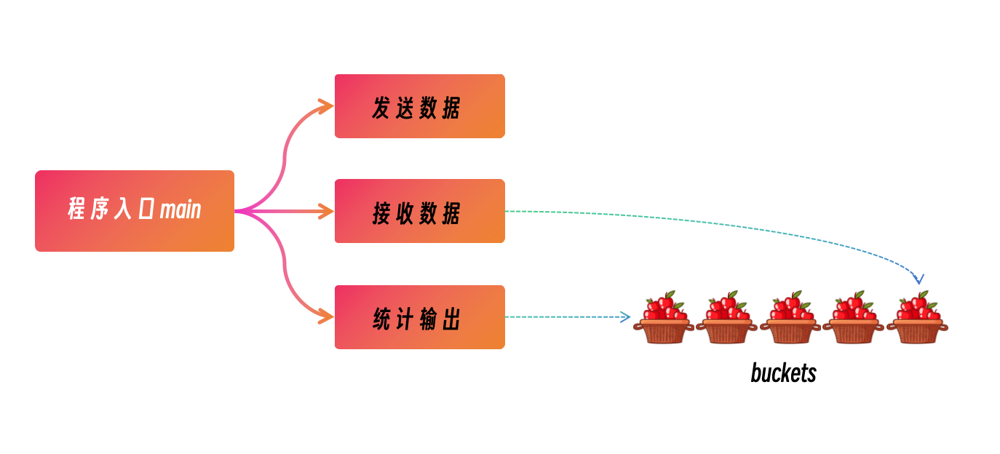

上个月我使用go实现了一个探测多目标的高频探测程序mping, 并且在后续的开发中支持了硬件时间戳和软件时间戳，提供更精准的时延。
好吧，公众号的文章忘记贴仓库地址了： smallnest/mping-rs
“用Rust 重写”正在以传销般的方式席卷整个开发领域，这一次，我也准备使用rust重写它，当然我也不是为了重写而写，重新的目的有四：
- 评估使用rust开发工具的难度
- 评估rust生态圈尤其是底层socket的编程的成熟度
- 评估rust程序的性能
- 积累一些rust底层网络编程的经验
Go版本的mping功能如下：
- 支持对多目标IP的探测
- 支持对网段的探测
- 支持对域名的探测
- 支持高频探测，支持限流
- 支持设置TOS、payload长度等选项
- 支持最大探测数量
- 支持每秒打印统计数据
- 支持时延
- 支持比特跳变检查
- 支持软硬件时间戳

我先前对mping这个工具的实现进行了拆解介绍mping: 使用新的icmp库实现探测和压测工具, 我把实现分成了四个模块：
- 主程序入口： 处理各种参数，比如网段信息转换成IP列表等，限流等
- 发送 goroutine: 负责发送ICMP探测包
- 接收 goroutine: 负责接收ICMP echo reply包
- 统计打印 goroutine: 负责统计打印每一秒的丢包率和时延，这里创新性的实现了bucket数据结构进行统计分析
这个代码架构还是很清晰的，结合Go成熟的raw socket的库，实现了一个高效的探测和压测集一身的ping工具。
所以我在使用rust实现的时候也是采用这种架构，以下是在动手之前以及在开发中的技术考量:
- 程序入口： 使用
structopt库而不是clap解析命令行参数。
structopt利用Rust的属性宏来简化命令行参数解析。它允许直接在struct定义中添加属性,来自动生成解析命令行参数所需的clap参数定义。这样可以跳过手动定义clap::Arg的过程,使命令行参数的定义更加简洁。
structopt的主要特性包括:
- 基于struct和字段属性自动生成clap参数定义
- 支持子命令,可以在struct中嵌套定义子命令
- 支持各种参数类型,如布尔类型、字符串、整数等
- 支持参数默认值、帮助信息等
- 简单的错误处理
- 支持完整的clap功能,可以直接获取clap::App对象进行自定义
对于mping这个工具来说，并不需要强大的命令行交互能力，我们只需要能把命令行的参数解析成对应类型的变量即可，所以structopt和很合适。
使用线程代替goroutine: 通常情况下rust的并发单元是线程，所以这里发送、接收、统计模块分别启动三个线程来处理。
当然事实上接收线程使用了主线程，而没有生成新的线程。
这里就有一个抉择，要不要使用async/await异步方式？
理论上这个程序是I/O密集型类型的程序，但是由于我们只需要一两个socket + 三个线程就可以完成，并没有成百上千的I/O并发单元争抢CPU,所以使用普通的线程就可以了。进一步，我们就不需要头痛该选择哪一个异步运行时库了。
网络库的抉择: 该使用哪一个库呢？标准库、tokio、socket2、nix、libc？
我们要实现的mping不是一个普通的TCP/UDP Client/Server 点对点的网络程序，也不是像web服务器这样的&层网络应用服务器，它是要能够收发ICMP 包，并且支持要单个socket发送和接收成百上千个目标地址的网络程序，而且也能够设置TOS、TTL等网络选项，所以综合考虑采用socket2, 它虽然不是标准库，但是相对于标准库，提供了更多的设置选项，更底层的控制。如果写标准的TCP/UDP，可能选择tokio就好了。nix、libc更底层，但是缺乏相关的文档和范例，如果使用它们怕调入了坑中爬不上来。
当然使用socket2也遇到了一个棘手的问题，就是对软硬件时间戳的设置和解析，搜索网上也没有可以参考的示例，询问AI (chatgpt3.5, claude, bard)给的答案都是胡说八道，最后在chatgpt4.0以及Go版本的实现的基础上终于实现出来了。
那么接下来我们看看代码的实现，然后再简单(粗糙)比较Rust和Go版本 mping工具的差异。 rust版本的完整代码在github上: smallnest/mping-rs。
- 包的解析: 有一个很好库pnet。
pnet支持各种网络包的处理，它还提供了其它一些网络处理的功能，我使用的它的子包pnet_packet,因为我需要处理IPv4、ICMP的包，包括发送的时候以及接收的时候。
程序入口
最重要的使用structopt定义命令行参数的结构体Opt:
1 2 3 4 5 6 7 8 9 10 11 12 13 14 15 16 17 18 19 20 21 22 23
| #[derive(Debug, StructOpt)] #[structopt( name = "mping", version = "0.1.4", about = "A multi-targets ping tool, which supports 10,000 packets/second." )] struct Opt { #[structopt( short = "w", long = "timeout", default_value = "1", help = "timeout in seconds" )] timeout: u64, #[structopt(short = "t", long = "ttl", default_value = "64", help = "time to live")] ttl: u32, #[structopt(short = "z", long = "tos", help = "type of service")] tos: Option<u32>, .... }
|
还有一个重要的逻辑就是解析多目标地址，我们需要把8.8.8.8/30,8.8.4.4,github.com这个目标解析成要探测的目标地址列表:
1 2 3 4 5 6 7 8 9 10 11 12 13 14 15 16 17 18 19 20 21 22 23 24 25 26 27
| fn parse_ips(input: &str) -> Vec<IpAddr> { let mut ips = Vec::new(); for s in input.split(',') { match s.parse::<IpNetwork>() { Ok(network) => { for ip in network.iter() { ips.push(ip); } } Err(_) => { if let Ok(ip) = s.parse::<IpAddr>() { ips.push(ip); } else if let Ok(addrs) = (s, 0).to_socket_addrs() { for addr in addrs { if let IpAddr::V4(ipv4) = addr.ip() { ips.push(IpAddr::V4(ipv4)); break; } } } } } } ips }
|
然后把主要的处理好的参数组织起来，交给ping函数处理:
1 2 3 4 5 6 7 8 9 10 11
| let popt = mping::ping::PingOption { timeout, ttl: opt.ttl, tos: opt.tos, ident: pid, len: opt.size, rate: opt.rate, delay: opt.delay, count: opt.count, }; mping::ping::ping(ip_addrs, popt)?;
|
mping::ping::ping会实现发送、接收、定时统计的功能。
发送逻辑
首先创建一个raw socket并设置它的选项：
1 2 3 4 5 6 7 8 9
| thread::spawn(move || { let socket = Socket::new(Domain::IPV4, Type::RAW, Some(Protocol::ICMPV4)).unwrap(); socket.set_ttl(popt.ttl).unwrap(); socket.set_write_timeout(Some(popt.timeout)).unwrap(); if let Some(tos_value) = popt.tos { socket.set_tos(tos_value).unwrap(); } ... }
|
接下来创建几种payload,用来检查链路中有没有比特跳变和改包行为。
然后创建了一个限流器，让发送端按照指定的速率均匀的发包：
1 2 3 4 5 6 7 8 9
| let zero_payload = vec![0; popt.len]; let one_payload = vec![1; popt.len]; let fivea_payload = vec![0x5A; popt.len]; let payloads: [&[u8]; 4] = [&rand_payload, &zero_payload, &one_payload, &fivea_payload]; let limiter = SyncLimiter::full(popt.rate, Duration::from_millis(1000)); let mut seq = 1u16; let mut sent_count = 0;
|
接下来准备要发送的ICMP echo request包：
1 2 3 4 5 6
| let mut buf = vec![0; 8 + payload.len()]; let mut packet = echo_request::MutableEchoRequestPacket::new(&mut buf[..]).unwrap(); packet.set_icmp_type(icmp::IcmpTypes::EchoRequest); packet.set_identifier(pid); packet.set_sequence_number(seq); ...
|
然后对每个目标地址都发送一次,注意这里我们只使用了一个raw socket:
1 2 3 4 5 6 7 8 9 10 11 12 13 14 15
| for ip in &addrs { let dest = SocketAddr::new(*ip, 0); let data = send_buckets.lock().unwrap(); data.add(...); drop(data); match socket.send_to(&buf, &dest.into()) { Ok(_) => {} Err(e) => { error!("Error in send: {:?}", e); return; } } }
|
这是发送端的主要的逻辑。它的目的就是不停的发包，发包。
接收逻辑
通过try_clone获得读取数据的socket, 赋值给变量socket2:
1
| let socket2 = socket.try_clone().expect("Failed to clone socket");
|
然后,我们在一个死循环中读取数据：
1 2 3 4 5 6 7 8 9 10 11 12 13 14 15 16 17 18 19 20 21
| let mut buffer: [u8; 2048] = [0; 2048]; loop { let size = match socket2.read(&mut buffer) { Ok(n) => n, Err(e) => { if let Some(err_code) = e.raw_os_error() { if err_code == 11 { continue; } } error!("Error in read: {:?}", &e); break; } }; let buf = &buffer[..size]; ... }
|
我们重点看看...省略的那部分，这段省略的逻辑主要是解析出ICMP echo reply的数据，检查数据是否正确，然后扔到统计数据的bucket中：
1 2 3 4 5 6 7 8 9 10 11 12 13 14 15 16 17 18 19 20 21 22 23 24 25 26 27 28 29 30 31 32 33 34 35 36 37 38 39 40 41 42 43 44 45 46 47 48 49 50 51 52
| let buf = &buffer[..size]; let ipv4_packet = Ipv4Packet::new(buf).unwrap(); let icmp_packet = pnet_packet::icmp::IcmpPacket::new(ipv4_packet.payload()).unwrap(); if icmp_packet.get_icmp_type() != IcmpTypes::EchoReply || icmp_packet.get_icmp_code() != echo_reply::IcmpCodes::NoCode { continue; } let echo_reply = match icmp::echo_reply::EchoReplyPacket::new(icmp_packet.packet()) { Some(echo_reply) => echo_reply, None => { continue; } }; if echo_reply.get_identifier() != pid { continue; } if payloads[echo_reply.get_sequence_number() as usize % payloads.len()][16..] != echo_reply.payload()[16..] { warn!( "bitflip detected! seq={:?},", echo_reply.get_sequence_number() ); } let payload = echo_reply.payload(); let ts_bytes = &payload[..16]; let txts = u128::from_be_bytes(ts_bytes.try_into().unwrap()); let dest_ip = ipv4_packet.get_source(); let now = SystemTime::now(); let since_the_epoch = now.duration_since(UNIX_EPOCH).unwrap(); let timestamp = since_the_epoch.as_nanos(); let buckets = read_buckets.lock().unwrap(); buckets.add_reply( txts / 1_000_000_000, Result { ... }, );
|
这样，接收数据的逻辑也完成。它的主要工作就是不停的收包，收包，然后把统计信息扔给统计模块进行统计输出。
统计逻辑
统计模块中定义了Buckets,代表当前还未处理的一批篮子(bucket)。因为发送万数据我们还需要留出缓冲时间(delay)等待回包，所以我们会保留最近一段时间的篮子，让回包有足够的时间翻入到相应的篮子中。
因为我们是按照秒进行统计的，每个篮子代表一秒内发送的包以及它相应的回包信息。我们只需每秒定时的把最久的篮子摘取掉，把它的统计数据输出出来就好了：
1 2 3 4 5
| #[derive(Default)] pub struct Buckets { pub buckets: Mutex<BinaryHeap<Bucket>>, pub map: Mutex<HashMap<u128, Bucket>>, }
|
buckets实现了一个最小堆，这样我们就方便的弹出最久的那个篮子。map保存每一个篮子，方便我们查找和更新，它的主键是时间戳(以秒为单位)。
接下来它要实现add、add_reply、pop、last等方法:
1 2 3 4 5 6 7 8 9 10 11 12 13 14 15 16 17 18 19 20 21 22 23 24 25 26 27 28 29 30 31 32 33 34 35 36 37 38 39 40 41 42 43 44 45 46 47
| impl Buckets { pub fn new() -> Buckets { Buckets { buckets: Mutex::new(BinaryHeap::new()), map: Mutex::new(HashMap::new()), } } pub fn add(&self, key: u128, value: Result) { let mut map = self.map.lock().unwrap(); map.entry(key).or_insert_with(|| { let bucket = Bucket { key, value: RwLock::new(HashMap::new()), }; self.buckets.lock().unwrap().push(bucket.clone()); bucket }); let bucket = map.get(&key).unwrap(); bucket.add(value); } pub fn add_reply(&self, key: u128, result: Result) { let mut map = self.map.lock().unwrap(); map.entry(key).or_insert_with(|| { self.buckets.lock().unwrap().push(Bucket::new(key)); Bucket::new(key) }); let bucket = map.get(&key).unwrap(); bucket.add_reply(result); } pub fn pop(&self) -> Option<Bucket> { let mut buckets = self.buckets.lock().unwrap(); let bucket = buckets.pop()?; let bucket = self.map.lock().unwrap().remove(&bucket.key).unwrap(); Some(bucket) } pub fn last(&self) -> Option<Bucket> { let buckets = self.buckets.lock().unwrap(); buckets.peek().cloned() } }
|
add方法主要是发送模块使用，在发送一个数据后，根据发送时间戳，放入到对应的篮子中。
add_reply方法主要是接收模块使用，在接收一个数据后，更新它的时延，并标记此seq已经接收到数据了。
pop和last方便统计的时候使用。因为定时器需要定时的检查最后的篮子存不存在，应不应该进行统计。
Bucket代表一个篮子，对应每一秒的统计数据：
1 2 3 4 5 6 7 8 9 10 11 12 13 14 15
| pub struct Bucket { pub key: u128, pub value: RwLock<HashMap<String, Result>>, } impl Clone for Bucket { fn clone(&self) -> Self { let value = self.value.read().unwrap().clone(); Bucket { key: self.key, value: RwLock::new(value), } } }
|
key使用时间戳(截短到秒)， value值代表每一个seq对应的请求和响应数据。
它的方法就不赘述了，就是和Buckets的方法对应，add和add_reply用来增加和更新统计数据。
以上Buckets和Bucket是数据结构，定义好这个数据结构后，就可以方便的统计了。
统计模块使用定时器每秒进行统计:
1 2 3 4 5
| let ticker = Ticker::new(0.., Duration::from_secs(1)); for _ in ticker { ... }
|
...中的逻辑主要是检查最久的Bucket，如果是已经处理的Bucket,那么就丢弃，如果是要待处理的数据，那么进行统计和输出：
1 2 3 4 5 6 7 8 9 10 11 12 13 14 15 16 17 18 19 20 21 22 23 24 25 26 27 28 29 30 31 32 33 34 35
| let buckets = buckets.lock().unwrap(); let bucket = buckets.last(); if bucket.is_none() { continue; } let bucket = bucket.unwrap(); if bucket.key <= last_key { buckets.pop(); continue; } if bucket.key <= SystemTime::now() .duration_since(UNIX_EPOCH) .unwrap() .as_nanos() - delay { if let Some(pop) = buckets.pop() { if pop.key < bucket.key { continue; } last_key = pop.key; let mut target_results = BTreeMap::new(); ... } }
|
以上就是统计模块的逻辑。只要定义好合适的数据结构，我们的统计分析就很容易实现了。
软硬件时间戳
在写本文的初稿的时候，我还没有为mping-rs实现软硬件的时间戳， 原因是缺乏相应的资料。在网上搜了n次之后，也每找到有用的资料和范例，虽然nix和libc也一些些代码，但是缺乏相应的文档或者示例。
在咨询了chatgpt3.5、claude.ai、bard等AI助手后，它们给出的例子都是胡说八道的，这也说明网上资料比较少，它们还没有正确的推理，不过在挣扎了一天后，通过chatgpt4.0和Go版本的mping,终于实现了软硬件的时间戳，chatgpt能给出80%正确的代码，再结合我在Go版本中实现的经验，最终实现的这个软硬件时间戳版本可以正常运行了。因为网上缺乏相应的资料，你如果对这一块感兴趣，可以参考实现。
这个版本和Go版本的略有不同，Go版本的mping对于低版本的内核，不支持SO_TIMESTAMPING的话，会退化使用SO_TIMESTAMPNS,而mping-rs会使用SO_TIMESTAMP,这并没有啥特殊的设计，两者都可以，知识从Out-Of-Bound控制数据中读取的数据结构略有不同。
我以接收数据的时候为例，介绍如何把返回的数据包进入网卡后设计的硬件时间戳获取出来。对于发送的时候，包进入本地socket的缓存，你的应用层的调用就返回了，这个时候还没有进入内核的协议栈的处理，你想一想你怎么获取协议栈设置的软件时间戳甚至网卡驱动设置的硬件时间戳？
要读取软硬件时间戳，你需要setsockopt把相应的参数设置上。
比较新的Linux内核版本支持SO_TIMESTAMPING选项，你设置这个选项的时候需要设置一堆的flags,指定要不要把发送和接收的软硬件时间戳的flag加上，把CMSG和TSONLY flag设置上，这就我们就能从控制信息中获取到时间戳了。如果你同时设置软硬件时间戳，它会尽量返回硬件时间戳，如果你的机器不支持硬件时间戳，那么它返回软件时间戳，再如果你的机器软件时间戳都不支持，那它没有时间戳可返回。
以下逻辑就是设置这些参数，先尝试设置SO_TIMESTAMPING选项,不成功的话再尝试设置SO_TIMESTAMP选项:
1 2 3 4 5 6 7 8 9 10 11 12 13 14 15 16 17 18 19 20 21 22 23 24 25 26 27 28 29 30 31 32 33 34
| let enable = SOF_TIMESTAMPING_SOFTWARE | SOF_TIMESTAMPING_TX_SOFTWARE | SOF_TIMESTAMPING_RX_SOFTWARE | SOF_TIMESTAMPING_SYS_HARDWARE | SOF_TIMESTAMPING_TX_HARDWARE | SOF_TIMESTAMPING_RX_HARDWARE | SOF_TIMESTAMPING_RAW_HARDWARE | SOF_TIMESTAMPING_OPT_CMSG | SOF_TIMESTAMPING_OPT_TSONLY; let ret = unsafe { setsockopt( socket2.as_raw_fd(), SOL_SOCKET, SO_TIMESTAMPING, &enable as *const _ as *const c_void, mem::size_of_val(&enable) as u32, ) }; if ret == -1 { warn!("Failed to set read SO_TIMESTAMPING"); let enable: c_int = 1; let ret = unsafe { setsockopt( socket2.as_raw_fd(), SOL_SOCKET, SO_TIMESTAMP, &enable as *const _ as *const c_void, std::mem::size_of_val(&enable) as u32, ) }; if ret == -1 { warn!("Failed to set SO_TIMESTAMP"); } }
|
因为我们需要读取控制信息， socket2库提供的Socket不支持相应额度读取，官方仓库中也有issue提到这个需求，但是没人实现，所以我们需要使用libc的recvmsg方法实现。 Go语言开发者(Gopher)应该庆幸Rob Pike这些大师在设计Go标准库的经验和能力，Go标准库早就支持方便的读取OOB控制数据了。
而使用libc的系统调用读取OOB数据还比较麻烦，首先我们要准备一些数据,最终组成一个msghdr变量，这是recvmsg系统调用所必须的：
1 2 3 4 5 6 7 8 9 10 11 12 13 14 15 16 17
| let mut buffer: [u8; 2048] = [0; 2048]; let mut control_buf = [0; 1024]; let mut iovec = iovec { iov_base: buffer.as_mut_ptr() as *mut c_void, iov_len: buffer.len(), }; let mut msghdr = msghdr { msg_name: std::ptr::null_mut(), msg_namelen: 0, msg_iov: &mut iovec, msg_iovlen: 1, msg_control: control_buf.as_mut_ptr() as *mut c_void, msg_controllen: control_buf.len(), msg_flags: 0, };
|
然后我们改造一下读取的逻辑，换成recvmsg系统调用:
1 2 3 4 5 6 7 8 9 10 11 12 13 14 15 16 17 18
| loop { let nbytes = unsafe { recvmsg(socket2.as_raw_fd(), &mut msghdr, 0) }; if nbytes == -1 { let err = Error::last_os_error(); if err.kind() == ErrorKind::WouldBlock { continue; } error!("Failed torr receive message"); return Err(Error::new(ErrorKind::Other, "Failed to receive message").into()); } let buf = &buffer[..nbytes as usize]; let ipv4_packet = Ipv4Packet::new(buf).unwrap(); let icmp_packet = pnet_packet::icmp::IcmpPacket::new(ipv4_packet.payload()).unwrap(); ... }
|
和先前的代码逻辑比较，这一块改动并不大，主要是替换成recvmsg。后面的ICMP的处理都是一样的。
但是这里我们通过msghdr这个变量，就可以得到控制信息msg_control,长度是msg_controllen。
接下来我们处理控制信息，从里面把时间戳的控制信息解析出来，我把它抽取成了一个函数:
1 2 3 4 5 6 7 8 9 10 11 12 13 14 15 16 17 18 19 20 21 22 23 24 25 26 27 28 29 30 31 32
| fn get_timestamp(msghdr: &mut msghdr) -> Option<SystemTime> { let mut cmsg: *mut cmsghdr = unsafe { libc::CMSG_FIRSTHDR(msghdr) }; while !cmsg.is_null() { if unsafe { (*cmsg).cmsg_level == SOL_SOCKET && (*cmsg).cmsg_type == SO_TIMESTAMP } { let tv: *mut timeval = unsafe { libc::CMSG_DATA(cmsg) } as *mut timeval; let timestamp = unsafe { *tv }; return Some( SystemTime::UNIX_EPOCH + Duration::new(timestamp.tv_sec as u64, timestamp.tv_usec as u32 * 1000), ); } if unsafe { (*cmsg).cmsg_level == SOL_SOCKET && (*cmsg).cmsg_type == SCM_TIMESTAMPING } { let tv: *mut [timespec; 3] = unsafe { libc::CMSG_DATA(cmsg) } as *mut [timespec; 3]; let timestamps = unsafe { *tv }; for timestamp in ×tamps { if timestamp.tv_sec != 0 || timestamp.tv_nsec != 0 { let seconds = Duration::from_secs(timestamp.tv_sec as u64); let nanoseconds = Duration::from_nanos(timestamp.tv_nsec as u64); if let Some(duration) = seconds.checked_add(nanoseconds) { return Some(SystemTime::UNIX_EPOCH + duration); } } } } cmsg = unsafe { libc::CMSG_NXTHDR(msghdr, cmsg) }; } None }
|
因为控制信息中可能包含多条信息，我们需要遍历找出我们需要的控制信息。
对于设置了SO_TIMESTAMPING的场景，我们可以通过(*cmsg).cmsg_level == SOL_SOCKET && (*cmsg).cmsg_type == SCM_TIMESTAMPING把控制信息筛选到，它的信息是包含三个timespec的数据，一般信息会放在第一个元素中，但是也可能放入第三个或者第二个，我们依次遍历这三个元素，找到第一个非零的元素即可。
对于设置了SO_TIMESTAMP的场景，我们可以通过(*cmsg).cmsg_level == SOL_SOCKET && (*cmsg).cmsg_type == SO_TIMESTAMP筛选出来，它的值是一个类型为timeval的值，包含秒数和微秒数。
这样我们就获取了软硬件的时间戳。
Rust版本mping和Go版本的mping我并没有做性能上的详细对比。简单谈一下。
二进制大小
Rust版本的mping生成的二进制大小是7M，而Go版本的是3.3M。
对于Rust版本，我们可以在Cargo.toml中添加上下面的信息进行优化，剔除符号表等信息:
1 2 3 4 5
| [profile.release] lto = true strip = true opt-level = "z" codegen-units = 1
|
优化后的大小是Rust版本的大小是1.6M,Go版本大小是2.1M。
优化后的Rust版本的mping占优。
CPU和内存
都执行sudo ./mping -r 100 8.8.8.8,8.8.4.4,github.com的情况下(腾讯云的一个轻量级服务器，2个虚拟核)
Rust版本的mping探测下面的目标的CPU占用0.6%，内存忽略不记。
Go版本的mping探测下面的目标的CPU占用4.2%，内存忽略不记。
Rust版本的mping占优。
时延
探测8.8.8.8, 看时延：sudo ./mping -r 100 8.8.8.8
Rust版本的波动比较大，从163.58ms到166.82ms都有。
Go版本的比较稳定，基本在164.50ms到165.25ms之间。